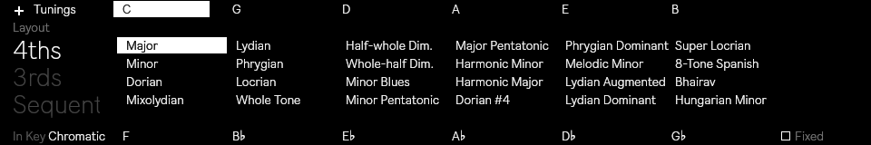
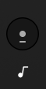
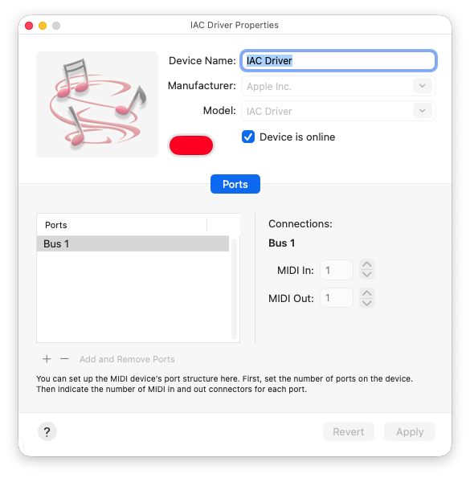
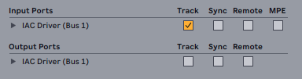
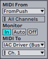
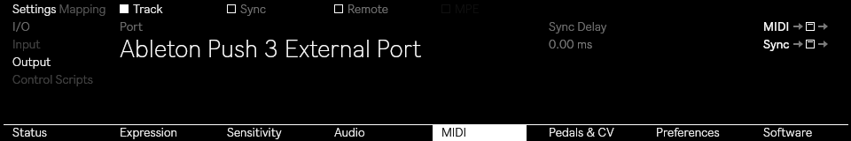

Video How-To
FAQ
Both the web app and the Max for Live device are designed to be used with the standard Ableton Push and Ableton Move configuration in chromatic mode. Before you begin, make sure you have them set up correctly:
Ableton Push
- Select the Scale button
- Use the first knob on the left to ensure that the layout is set to 4ths
- Use the first button on the left below the screen to select Chromatic
Optional
- Select the key of C Major
- Leave the Fixed checkbox set to OFF

When set up correctly, the grid design on Push should be identical to that of the Visualizer.
Ableton Move
- Open a set and select a melodic instrument
- Hold the Shift key and press the ninth button from the left on the step sequencer.

- Select Chromatic
- Optional: Select the key of C Major
- Layout: select between Push (8x8 grid) or Move (8x4 grid)
- Windows Size*: use this option to make the Visualizer window smaller (S) or bigger (L). Default: M
- Display note names: enabled by default, it shows the note names on the Visualizer
- Use ♭ flats instead of ♯ sharps: changes the display of notes on the Visualizer grid to show flats instead of sharps. This only works if the "Display note names" option is enabled.
- Fixed Grid: available only on Push. When Fixed is on, the notes of the pad grid remain in the same position when you change keys, e.g. the bottom-left pad will always play C (unless the key does not contain a C, in which case the pad will play the nearest note to C). When Fixed is off, the notes on the pad grid shift so that the bottom-left pad always plays the root note of the selected key. This option is not automatically updated on Push. If you change it, remember to set it on the device by pressing the Scale button.
The web app offers additional options for choosing the root note and scale. This is because in the Max for Live version, the device automatically follows the settings defined by the clip (Scale Awareness). The web app also features a menu for selecting the MIDI input port in order to receive MIDI signals from devices.
* Max for Live onlyIn order to send MIDI messages from Ableton Push and Ableton Move to the web app, you need to set them to "Control Live mode" and use a virtual MIDI card to route these signals internally on your computer. If you want to use the devices in Standalone Mode, you need a MIDI interface connected to your computer. See the instructions below.
⚠️ WebMIDI is supported in Edge, Chrome, Opera, and Firefox browsers.
Mac setup
- On your Mac go to
Applications > Utilityand open Audio MIDI Setup - Make sure that you see the MIDI Studio Window. You can use the ⌘ 2 shortcut
- Double click on IAC Driver
- Make sure that Device is online is selected

- Connect your Ableton Push or Ableton Move to your computer, and set them in "Control Live" mode
- Open Ableton Live, in the MIDI Preference tab make sure that the IAC Driver is selected in the MIDI Input ports with the "Track" option selected.

- On a MIDI Track set the MIDI From to
From PushorMove Input (Ableton Move (Live Port)). - Set the MIDI Out to
IAC Driver (Bus 1)and then set Monitor to IN

- Now open the Web App and in the MIDI Input Port(s) dropdown select IAC Driver Bus 1
Use Push 3 Standalone with the Web App
- Connect your MIDI interface to your computer and install any drivers required for it to work.
- Connect the TRS Type A > MIDI DIN adapter to the MIDI Out port on your Ableton Push.
- Open Push's MIDI preferences, select Output with the first knob on the left, select Ableton Push 3 External Port
- With the second knob, and make sure the Track checkbox is selected.
- Now open the Web App and in the MIDI Input Port(s) dropdown select your MIDI Interface

.accordion-body, though the transition does limit overflow.
Once you have downloaded the device, open the download folder on your computer. Extract the content from the ZIP, locate the .amxd file, and drag it into the User Library in Ableton Live.
The chord recognition feature is automatically managed by the tonal.js library.
The Octave Up and Octave Down buttons are not supported in the Max for Live device.
In the web app, however, these buttons are supported. Make sure that your Move and Push are set to Control Live Mode. Keep the web app configured as described above, and ensure that one of the following ports is displayed (but not selected) in the MIDI Input Port(s) dropdown: Ableton Push 3 Live Port or Ableton Move Live Port. If those ports don't show up, close the browser window and re-open the page.
Send us an email: info@frequenze.org